CODING AGENTS AS PIXEL WORLD MODELS
traex/DeepSeek-V4.1-Flash · 0145
点击播放 · 原生 RGB 像素
逐轮保存的候选
回放视频、检查图与代码变化。
每份候选均可单独播放。实际图片检查记录在下方工具轨迹中。
候选 01播放与检查图
点击播放 · 原生 RGB 像素
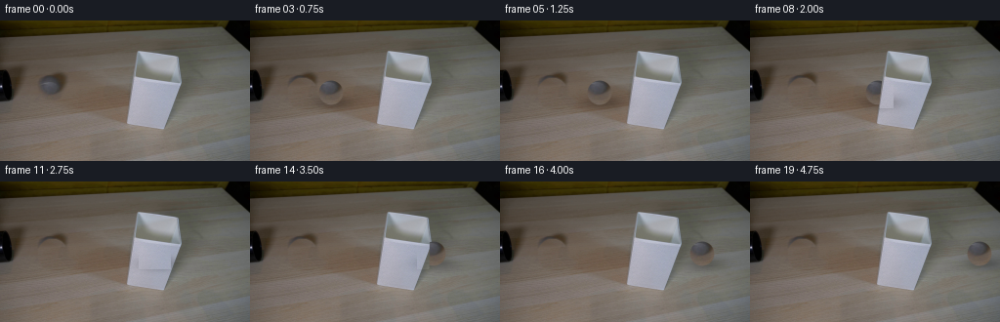
展开代码变化
--- 上一保存版本
+++ 本次保存版本
@@ -0,0 +1,156 @@
+from pathlib import Path
+
+import cv2
+import numpy as np
+
+import artifact_io
+
+
+WIDTH = 256
+HEIGHT = 144
+FRAME_COUNT = 20
+FPS = 4
+
+
+def smoothstep(edge0, edge1, value):
+ t = np.clip((value - edge0) / (edge1 - edge0), 0.0, 1.0)
+ return t * t * (3.0 - 2.0 * t)
+
+
+def build_clean_plate(frame):
+ """Remove the starting ball using nearby wood with matched low-frequency light."""
+ image = frame.astype(np.float32)
+ x0, x1, y0, y1 = 34, 78, 50, 101
+ shift = 46
+ source = image[y0:y1, x0 + shift : x1 + shift].copy()
+
+ # Match the copied wood to the local row illumination without moving its grain.
+ target_rows = []
+ source_rows = []
+ for y in range(y0, y1):
+ left = image[y, 25:34].mean(axis=0)
+ right = image[y, 70:79].mean(axis=0)
+ target_rows.append(0.5 * (left + right))
+ source_rows.append(image[y, x0 + shift : x1 + shift].mean(axis=0))
+ source += (np.asarray(target_rows) - np.asarray(source_rows))[:, None, :]
+
+ yy, xx = np.mgrid[y0:y1, x0:x1]
+ sphere = np.hypot(xx - 53.5, yy - 73.5) <= 15.2
+ contact = ((xx - 59.0) / 18.0) ** 2 + ((yy - 83.5) / 7.0) ** 2 <= 1.0
+ mask = (sphere | contact).astype(np.float32)
+ mask = cv2.GaussianBlur(mask, (5, 5), 1.0)
+ mask = np.clip(mask * 1.45, 0.0, 1.0)[..., None]
+
+ result = image.copy()
+ result[y0:y1, x0:x1] = (
+ source * mask + result[y0:y1, x0:x1] * (1.0 - mask)
+ )
+ return np.clip(result, 0, 255).astype(np.uint8)
+
+
+def extract_ball(frame):
+ cx, cy = 53.5, 73.5
+ radius = 16
+ x0, x1 = int(cx) - radius, int(cx) + radius + 1
+ y0, y1 = int(cy) - radius, int(cy) + radius + 1
+ sprite = frame[y0:y1, x0:x1].astype(np.float32)
+
+ yy, xx = np.mgrid[y0:y1, x0:x1]
+ distance = np.hypot(xx - cx, yy - cy)
+ alpha = 1.0 - smoothstep(11.6, 13.2, distance)
+ return sprite, alpha, (cx - x0, cy - y0)
+
+
+def make_cup_mask(frame):
+ """Antialiased silhouette of the white lampshade, used as a foreground layer."""
+ scale = 6
+ polygon = np.array(
+ [
+ [139.5, 25.5],
+ [178.5, 28.5],
+ [184.0, 34.0],
+ [183.5, 88.5],
+ [173.0, 109.0],
+ [130.5, 100.0],
+ [138.5, 33.5],
+ ],
+ dtype=np.float32,
+ )
+ mask = np.zeros((HEIGHT * scale, WIDTH * scale), np.uint8)
+ cv2.fillPoly(mask, [np.rint(polygon * scale).astype(np.int32)], 255)
+ mask = cv2.resize(mask, (WIDTH, HEIGHT), interpolation=cv2.INTER_AREA)
+ return mask.astype(np.float32) / 255.0
+
+
+def place_ball(frame, clean_plate, cup_mask, sprite, alpha, sprite_center, x):
+ cx = float(x)
+ cy = 73.5
+ result = clean_plate.astype(np.float32)
+
+ # A soft contact shadow anchors the ball to the table.
+ yy, xx = np.mgrid[:HEIGHT, :WIDTH]
+ shadow = np.exp(
+ -0.5
+ * (
+ ((xx - (cx + 3.5)) / 14.5) ** 2
+ + ((yy - (cy + 10.2)) / 4.8) ** 2
+ )
+ )
+ shadow *= 0.25
+ result *= 1.0 - shadow[..., None]
+
+ sx, sy = sprite_center
+ left = int(round(cx - sx))
+ top = int(round(cy - sy))
+ right = left + sprite.shape[1]
+ bottom = top + sprite.shape[0]
+
+ dx0, dy0 = max(0, left), max(0, top)
+ dx1, dy1 = min(WIDTH, right), min(HEIGHT, bottom)
+ sx0, sy0 = dx0 - left, dy0 - top
+ sx1 = sx0 + (dx1 - dx0)
+ sy1 = sy0 + (dy1 - dy0)
+ if dx1 <= dx0 or dy1 <= dy0:
+ return np.clip(result, 0, 255).astype(np.uint8)
+
+ ball_rgb = sprite[sy0:sy1, sx0:sx1]
+ ball_alpha = alpha[sy0:sy1, sx0:sx1, None]
+ region = result[dy0:dy1, dx0:dx1]
+ result[dy0:dy1, dx0:dx1] = ball_rgb * ball_alpha + region * (1.0 - ball_alpha)
+
+ # The lampshade is closer to the camera and occludes the rolling ball.
+ foreground = cup_mask[dy0:dy1, dx0:dx1, None]
+ result[dy0:dy1, dx0:dx1] = (
+ frame[dy0:dy1, dx0:dx1].astype(np.float32) * foreground
+ + result[dy0:dy1, dx0:dx1] * (1.0 - foreground)
+ )
+ return np.clip(result, 0, 255).astype(np.uint8)
+
+
+def main():
+ case_dir = Path(__file__).resolve().parent
+ first = cv2.cvtColor(
+ cv2.imread(str(case_dir / "first_frame.png"), cv2.IMREAD_COLOR),
+ cv2.COLOR_BGR2RGB,
+ )
+ if first.shape != (HEIGHT, WIDTH, 3):
+ raise ValueError(f"Unexpected first-frame shape: {first.shape}")
+
+ clean_plate = build_clean_plate(first)
+ sprite, alpha, sprite_center = extract_ball(first)
+ cup_mask = make_cup_mask(first)
+
+ frames = np.empty((FRAME_COUNT, HEIGHT, WIDTH, 3), dtype=np.uint8)
+ frames[0] = first
+ for index in range(1, FRAME_COUNT):
+ # Constant rolling speed across the visible tabletop.
+ x = 54.0 + (235.0 - 54.0) * index / (FRAME_COUNT - 1)
+ frames[index] = place_ball(
+ first, clean_plate, cup_mask, sprite, alpha, sprite_center, x
+ )
+
+ artifact_io.save(frames, case_dir)
+
+
+if __name__ == "__main__":
+ main()
可观测工具轨迹
实际执行的命令与返回图片。
命令 1exit 0
/bin/bash -c "pwd && rg --files -g '"'!*.mp4'"' -g '"'!*.mov'"' | sed -n '1,200p'"
命令 2exit 0
/bin/bash -c "sed -n '1,240p' prompt.txt"
命令 3exit 0
/bin/bash -c "sed -n '1,300p' GENERATION_RULES.md"
命令 4exit 0
/bin/bash -c "find . -maxdepth 2 -type f -printf '%p\\n' | sort | sed -n '1,240p'; printf '\\n--- dirs ---\\n'; find . -maxdepth 2 -type d -printf '%p\\n' | sort | sed -n '1,160p'"
命令 5exit 0
/bin/bash -c "sed -n '1,260p' artifact_io.py"
命令 6exit 0
/bin/bash -c "python - <<'PY'
from PIL import Image
im=Image.open('first_frame.png')
print(im.mode, im.size)
print(im.getpixel((53,73)), im.getpixel((120,80)), im.getpixel((10,76)))
PY"命令 7exit 0
/bin/bash -c "python - <<'PY' import importlib.util for m in ['numpy','PIL','cv2','scipy','skimage','matplotlib']: print(m, bool(importlib.util.find_spec(m))) PY ffmpeg -version | head -n 2"
命令 8exit 0
/bin/bash -c "python - <<'PY'
from PIL import Image
im=Image.open('first_frame.png')
im.crop((0,45,95,110)).resize((760,520),Image.Resampling.NEAREST).save('.tmp/left_crop.png')
im.crop((20,50,100,100)).resize((800,500),Image.Resampling.LANCZOS).save('.tmp/ball_crop.png')
PY"命令 9exit 0
/bin/bash -c "python - <<'PY'
import cv2, numpy as np
im=cv2.imread('first_frame.png')
g=cv2.cvtColor(im,cv2.COLOR_BGR2GRAY)
c=cv2.HoughCircles(g,cv2.HOUGH_GRADIENT,dp=1,minDist=10,param1=60,param2=15,minRadius=7,maxRadius=14)
print(c)
# print grayscale/saturation matrix around ball at 2px steps
hsv=cv2.cvtColor(im,cv2.COLOR_BGR2HSV)
for y in range(61,87,2):
vals=[]
for x in range(40,67,2):
h,s,v=hsv[y,x]; vals.append(f'{g[y,x]:3d}/{s:2d}')
print(y,' '.join(vals))
PY"命令 10exit 0
/bin/bash -c "python - <<'PY'
from PIL import Image
im=Image.open('first_frame.png')
im.crop((126,16,190,122)).resize((512,848),Image.Resampling.NEAREST).save('.tmp/cup_crop.png')
PY"命令 11exit 0
/bin/bash -c "python - <<'PY'
from PIL import Image
im=Image.open('first_frame.png')
im.crop((0,50,20,105)).resize((200,550),Image.Resampling.NEAREST).save('.tmp/tube_crop.png')
PY"命令 12exit 0
/bin/bash -c "python - <<'PY'
from PIL import Image
import numpy as np
im=np.array(Image.open('first_frame.png'))
# print average rgb by annular/rings around center 53.5,73? from center
cx,cy=53.5,73.5
for yy in range(58,90,2):
row=[]
for xx in range(39,69,2):
r,g,b=im[yy,xx]
if (xx-cx)**2+(yy-cy)**2 <= 14**2:
row.append(f'{r:3d},{g:3d},{b:3d}')
else: row.append(' ')
print(yy,' '.join(row))
PY"命令 13exit 0
/bin/bash -c "python - <<'PY'
import cv2, numpy as np
im=cv2.imread('first_frame.png')
mask=np.zeros(im.shape[:2],np.uint8)
# ball plus subtle contact shadow
cv2.circle(mask,(54,73),14,255,-1)
cv2.ellipse(mask,(59,83),(16,8),0,0,360,255,-1)
out=cv2.inpaint(im,mask,4,cv2.INPAINT_TELEA)
cv2.imwrite('.tmp/inpaint.png',out)
cv2.imwrite('.tmp/mask.png',mask)
PY"命令 14exit 1
/bin/bash -c "python - <<'PY'
import cv2, numpy as np
im=cv2.imread('first_frame.png')
# make soft mask around ball
mask=np.zeros(im.shape[:2],np.uint8)
cv2.circle(mask,(54,73),14,255,-1)
cv2.ellipse(mask,(58,82),(17,8),0,0,360,255,-1)
# source nearby same y
src=im[54:94,76:116].copy()
# enlarge mask crop
crop=mask[54:94,38:78]
# seamless clone source into target? Need source mask of all 255 same shape as src; target center should center source patch
srcmask=np.full(src.shape[:2],255,np.uint8)
# mask target patch at local 0:40, x0:40; seamlessClone destination whole image and center where patch goes
# source full src, mask full, target point center (96? no): target x38:78 center 58,y74
out=cv2.seamlessClone(src,im,srcmask,(58,74),cv2.NORMAL_CLONE)
# only use within mask (soft edge)
a=mask.astype(np.float32)[...,None]/255
# feather
a=cv2.GaussianBlur(a,(5,5),1.2)
res=(out*a+im*(1-a)).astype(np.uint8)
cv2.imwrite('.tmp/background_clone.png',res)
PY"命令 15exit 0
/bin/bash -c "python - <<'PY'
import cv2, numpy as np
im=cv2.imread('first_frame.png')
mask=np.zeros(im.shape[:2],np.uint8)
bgdModel=np.zeros((1,65),np.float64); fgdModel=np.zeros((1,65),np.float64)
rect=(127,22,60,92)
cv2.grabCut(im,mask,rect,bgdModel,fgdModel,5,cv2.GC_INIT_WITH_RECT)
out=np.where(((mask==1)|(mask==3))[...,None],im,0).astype(np.uint8)
cv2.imwrite('.tmp/cup_mask.png',out)
cv2.imwrite('.tmp/cup_alpha.png',((mask==1)|(mask==3)).astype(np.uint8)*255)
PY"命令 16exit 0
/bin/bash -c "python - <<'PY'
import cv2, numpy as np
im=cv2.imread('first_frame.png')
out=im.copy()
# copy wood-only patch to ball area
sx0,sy0=76,50; w,h=44,46
tx0,ty0=32,50
patch=im[sy0:sy0+h,sx0:sx0+w].copy()
# multi-band blend with mask that leaves center 100%, feather outside
mask=np.zeros((h,w),np.uint8); cv2.ellipse(mask,(22,24),(19,19),0,0,360,255,-1)
mask=cv2.GaussianBlur(mask,(7,7),1.5)
a=(mask.astype(np.float32)/255)[...,None]
roi=out[ty0:ty0+h,tx0:tx0+w]
out[ty0:ty0+h,tx0:tx0+w]=(patch*a+roi*(1-a)).astype(np.uint8)
cv2.imwrite('.tmp/background_patch.png',out)
cv2.imwrite('.tmp/bg_compare.png',np.hstack([im,out]))
PY"命令 17exit 0
/bin/bash -c "python - <<'PY'
from PIL import Image
import numpy as np
im=np.array(Image.open('first_frame.png'))
# sample table rows to estimate wood brightness near ball
for y in range(55,95,5):
print(y, [tuple(im[y,x]) for x in [30,34,38,42,62,66,70,74,78]])
PY"命令 18exit 0
/bin/bash -c "python - <<'PY'
from PIL import Image
im=Image.open('first_frame.png')
# ball exact crop with grid
im.crop((38,57,70,90)).resize((640,660),Image.Resampling.NEAREST).save('.tmp/ball_pixel.png')
PY"命令 19exit 0
/bin/bash -c "python - <<'PY'
import cv2, numpy as np
im=cv2.imread('first_frame.png')
# Print edge line pixels near tube: dark threshold positions per row x 0..35
for y in range(48,112,3):
g=cv2.cvtColor(im,cv2.COLOR_BGR2GRAY)[y]
xs=np.where(g[:38]<50)[0]
if len(xs): print(y, xs.min(),xs.max(),[(int(x),int(g[x])) for x in xs[::max(1,len(xs)//8)]])
PY"命令 20exit 0
/bin/bash -c "python - <<'PY'
import cv2,numpy as np
im=cv2.imread('first_frame.png')
mask=np.zeros(im.shape[:2],np.uint8)
cv2.ellipse(mask,(54,73),(13,13),0,0,360,255,-1)
# Include dark contact shadow under ball
cv2.ellipse(mask,(61,84),(15,6),0,0,360,255,-1)
for r in [2,3,5,8]:
out=cv2.inpaint(im,mask,r,cv2.INPAINT_TELEA)
cv2.imwrite(f'.tmp/inpaint{r}.png',out)
# crop comparisons
ims=[]
for r in [2,3,5,8]:
a=cv2.imread(f'.tmp/inpaint{r}.png')[55:95,25:95]
ims.append(cv2.resize(a,(420,240),interpolation=cv2.INTER_NEAREST))
cv2.imwrite('.tmp/inpaint_compare.png',np.hstack(ims))
PY"命令 21exit 0
/bin/bash -c "python - <<'PY'
from PIL import Image
import numpy as np
im=np.array(Image.open('first_frame.png'))
# compute wood color stats of plausible rows at x=30..75 excluding ball
for y in range(56,94):
p=im[y,30:75]
med=np.median(p,axis=0).astype(int)
if y%3==0: print(y,med.tolist(), p.std(axis=0).astype(int).tolist())
PY"命令 22exit 1
/bin/bash -c "python - <<'PY'
import cv2,numpy as np
im=cv2.imread('first_frame.png')
# manually blended background: texture from vertical offset but mean corrected per row from unaffected left/right
bg=im.copy().astype(np.float32)
x0,x1,y0,y1=28,92,50,101
# source columns 82:146 but avoid table highlights? use same y plus local lighting mean correction from x=30 and x=76
src=im[46:103,82:146].astype(np.float32)
patch=src[4:55]
# blend broad mask
H,W=patch.shape[:2]
yy,xx=np.mgrid[0:H,0:W]
mask=((xx-32)/31)**2+((yy-25)/27)**2
alpha=np.clip((1.15-mask)*2.5,0,1)[...,None]
roi=bg[50:105,28:92]
# correct patch means to row local target means from x 30 and 76
# do simple seamless via matching average around
bg[50:105,28:92]=patch*alpha+roi*(1-alpha)
cv2.imwrite('.tmp/bg_manual.png',bg.astype(np.uint8))
PY"命令 23exit 0
/bin/bash -c "python - <<'PY'
import cv2,numpy as np
im=cv2.imread('first_frame.png')
# Clean plate via CV2 inpaint radius 2, limited to ball and contact area
mask=np.zeros(im.shape[:2],np.uint8)
cv2.circle(mask,(54,73),13,255,-1)
# don't inpaint far shadow, only directly under ball
cv2.ellipse(mask,(55,84),(14,5),0,0,360,255,-1)
mask=cv2.GaussianBlur(mask,(3,3),.7)
clean=cv2.inpaint(im,mask,2,cv2.INPAINT_TELEA)
# Smooth/denoise only inpainted zone to avoid texture artifacts
blur=cv2.GaussianBlur(clean,(3,3),0)
a=(mask.astype(np.float32)/255)[...,None]
out=(blur*a+clean*(1-a)).astype(np.uint8)
cv2.imwrite('.tmp/clean_plate.png',out)
cv2.imwrite('.tmp/clean_crop.png',cv2.resize(out[50:100,25:100],(600,400),interpolation=cv2.INTER_NEAREST))
PY"命令 24exit 0
/bin/bash -c "python - <<'PY'
import cv2, numpy as np
im=cv2.imread('first_frame.png')
# sample candidate background by row: extrapolate from x=30..44 and x=64..78 via horizontal linear interpolation plus texture from same row shifted
for y in [58,62,66,70,74,78,82,86,90]:
print(y, 'L',im[y,30:44].mean(0).astype(int), 'R',im[y,64:78].mean(0).astype(int))
PY"命令 25exit 0
/bin/bash -c "python - <<'PY'
from PIL import Image
import numpy as np
im=np.array(Image.open('first_frame.png'))
for y in [58,62,66,70,74,78,82,86,90]: print(y, im[y,30:44].mean(0).astype(int),im[y,64:78].mean(0).astype(int))
PY"命令 26exit 0
/bin/bash -c "python - <<'PY'
from PIL import Image
import numpy as np
im=np.array(Image.open('first_frame.png'))
# print x profile around ball at selected rows
for y in [66,70,73,76,80,83]:
print('y',y)
print([(x,tuple(int(z) for z in im[y,x])) for x in range(30,82,2)])
PY"命令 27exit 0
/bin/bash -c 'git status --short'
命令 28exit 0
/bin/bash -c "python - <<'PY'
import cv2,numpy as np
im=cv2.imread('first_frame.png')
ims=[]
for r in [2,3,5,8]:
a=cv2.imread(f'.tmp/inpaint{r}.png')[55:95,25:95]
ims.append(cv2.resize(a,(420,240),interpolation=cv2.INTER_NEAREST))
cv2.imwrite('.tmp/inpaint_compare2.png',np.hstack(ims))
PY"命令 29exit 0
/bin/bash -c "python - <<'PY'
from PIL import Image
import numpy as np
im=np.array(Image.open('first_frame.png'))
# Get mask from center, but remove dark contact by only circle 12
Y,X=np.mgrid[:144,:256]
d=np.hypot(X-53.5,Y-73.5)
for r in [11.5,12.0,12.5,13.0]:
m=d<=r
vals=im[m]
print(r, vals.mean(0).round(1),np.percentile(vals,[10,50,90],axis=0))
PY"命令 30exit 0
/bin/bash -c "python - <<'PY'
import cv2,numpy as np
im=cv2.imread('first_frame.png')
# Compare with inpaint radius 1 (mask hard circle radius 12)
mask=np.zeros(im.shape[:2],np.uint8)
cv2.circle(mask,(54,73),12,255,-1)
for r in [1,2,3]:
o=cv2.inpaint(im,mask,r,cv2.INPAINT_TELEA)
cv2.imwrite(f'.tmp/ip1_{r}.png',o)
PY"命令 31exit 0
/bin/bash -c "python - <<'PY'
import cv2,numpy as np
im=cv2.imread('first_frame.png')
# show tube at native upscaled lz
cv2.imwrite('.tmp/tube_smooth.png',cv2.resize(im[45:115,0:40],(320,560),interpolation=cv2.INTER_LANCZOS4))
PY"命令 32exit 0
/bin/bash -c "python - <<'PY'
import cv2, numpy as np
m=cv2.imread('.tmp/cup_alpha.png',0)
ys,xs=np.where(m>0)
print(xs.min(),xs.max(),ys.min(),ys.max(),len(xs))
cv2.imwrite('.tmp/cup_alpha_vis.png',cv2.resize(m[15:120,120:195],(300,420),interpolation=cv2.INTER_NEAREST))
PY"命令 33exit 0
/bin/bash -c "python - <<'PY'
import cv2,numpy as np
im=cv2.imread('first_frame.png')
# Detailed segmentation mask: whiteness (R,G,B high and neutral) plus geometric polygon for cup.
g=cv2.cvtColor(im,cv2.COLOR_BGR2GRAY).astype(float)
sat=cv2.cvtColor(im,cv2.COLOR_BGR2HSV)[:,:,1].astype(float)
# inspect ranges in cup crop
print('white',g[25:110,130:185].min(),g[25:110,130:185].max(),'sat',sat[25:110,130:185].min(),sat[25:110,130:185].max())
# threshold
mask=((g>90)&(sat<80)).astype(np.uint8)*255
mask[:15]=0;mask[120:]=0;mask[:,:115]=0;mask[:,205:]=0
cv2.imwrite('.tmp/cup_thresh.png',mask)
PY"命令 34exit 0
/bin/bash -c "python - <<'PY'
import cv2,numpy as np
im=cv2.imread('first_frame.png')
g=cv2.cvtColor(im,cv2.COLOR_BGR2GRAY)
# print cup centerline pixels y x=157 & edges
for y in range(20,115,3):
print(y,[(x,int(g[y,x])) for x in [128,130,132,134,136,140,145,150,155,160,165,170,175,180,183,185]])
PY"命令 35exit 0
/bin/bash -c "python - <<'PY'
from PIL import Image
import numpy as np
im=np.array(Image.open('first_frame.png'))
# exact shape rows: print gray over x 120..195 at y=20..115 with chars
g=(0.299*im[:,:,0]+0.587*im[:,:,1]+0.114*im[:,:,2]).astype(int)
chars=' .:-=+*#%@'
for y in range(18,116,2):
s=''
for x in range(115,197,1):
v=g[y,x]
if v>=165:c='@'
elif v>=150:c='#'
elif v>=135:c='*'
elif v>=120:c='+'
elif v>=105:c='='
elif v>=90:c='-'
elif v>=75:c=':'
elif v>=60:c='.'
else:c=' '
s+=c
print(f'{y:3d}',s)
PY"命令 36exit 0
/bin/bash -c "python - <<'PY'
import cv2,numpy as np
im=cv2.imread('first_frame.png')
h,w=im.shape[:2]
yy,xx=np.mgrid[:h,:w]
ball=((xx-53.5)**2+(yy-73.5)**2 <= 13.0**2)
shadow=(((xx-58.0)/16.5)**2+((yy-83.0)/6.5)**2 <=1)
mask=(ball|shadow)
mask=cv2.GaussianBlur(mask.astype(np.uint8)*255,(3,3),0.6).astype(float)/255
# source patch shift
dx=32
src=np.roll(im,-dx,axis=1) # src[y,x]=im[y,x+dx]
# color correct by medians in ring
ring=cv2.dilate((mask>0.2).astype(np.uint8),np.ones((9,9),np.uint8))>0
ring &= mask<0.05
# only ring within x 25:95
ring &= (xx>=25)&(xx<95)&(yy>=50)&(yy<100)
diff=np.median(im[ring].astype(float)-src[ring].astype(float),axis=0)
print('diff',diff)
patch=np.clip(src.astype(float)+diff,0,255)
# use alpha but blur mask larger; combine
out=(patch*mask[...,None]+im.astype(float)*(1-mask[...,None])).astype(np.uint8)
# preserve outside exact
out[mask<1e-4]=im[mask<1e-4]
cv2.imwrite('.tmp/bg_shift.png',out)
cv2.imwrite('.tmp/bg_shift_crop.png',cv2.resize(out[50:100,20:100],(640,400),interpolation=cv2.INTER_NEAREST))
PY"命令 37exit 0
/bin/bash -c "python - <<'PY'
import cv2, numpy as np
im=cv2.imread('first_frame.png')
# compare ring medians near ball to right patch by row; sample
for y in range(55,95,4):
print(y, 'L',im[y,30:40].mean(0).astype(int),'R',im[y,68:78].mean(0).astype(int),'R2',im[y,88:98].mean(0).astype(int))
PY"命令 38exit 0
/bin/bash -c "python - <<'PY'
import cv2,numpy as np
im=cv2.imread('first_frame.png')
# create contact shadow only visual from known ball base: ellipse center 57,83 width30 height12 darkening 0.35; initial frame will be original so only later
for alpha in [0.25,0.35,0.45]:
o=im.astype(float)
h,w=im.shape[:2]; yy,xx=np.mgrid[:h,:w]
m=np.exp(-(((xx-59)/17)**2+((yy-84)/6)**2)*1.8)
o*= (1-alpha*m[...,None])
cv2.imwrite(f'.tmp/shadow{alpha}.png',o.astype(np.uint8))
PY"命令 39exit 0
/bin/bash -c "python - <<'PY'
import cv2,numpy as np
im=cv2.imread('first_frame.png')
# source patch from right, same rows y=51..99, x=76..124, 48x48
src=im[50:100,76:126].copy()
mask=np.zeros(src.shape[:2],np.uint8)
cv2.ellipse(mask,(24,23),(20,19),0,0,360,255,-1)
# feather not for seamless
for mode,name in [(cv2.NORMAL_CLONE,'normal'),(cv2.MIXED_CLONE,'mixed')]:
out=cv2.seamlessClone(src,im,mask,(54,74),mode)
cv2.imwrite(f'.tmp/clone_{name}.png',out)
cv2.imwrite(f'.tmp/clone_{name}_crop.png',cv2.resize(out[45:105,20:100],(640,480),interpolation=cv2.INTER_NEAREST))
PY"命令 40exit 1
/bin/bash -c "python - <<'PY'
import cv2,numpy as np
im=cv2.imread('first_frame.png')
# Match source patch (76:126) to target local row means, using source detail only
src=im[50:100,76:126].astype(np.float32)
# target means based on left/right edge interpolation: mean of x 30:38 and 66:74 per y
tgt=[]
for yy in range(50,100):
lm=im[yy,28:38].mean(0); rm=im[yy,66:76].mean(0)
tgt.append((lm+rm)/2)
tgt=np.array(tgt)
# use median source row mean
sm=src.mean(axis=1)
adj=src+(tgt-sm)[:,None,:]
# apply to ellipse region center 54,74 radius 20 with feather
out=im.copy().astype(np.float32)
yy,xx=np.mgrid[:144,:256]
d=np.hypot((xx-54)/21,(yy-74)/21)
a=np.clip((1.0-d)*3.0,0,1)
a=np.clip(a,0,1)[...,None]
roi=out[50:100,28:78] # careful target crop x 28:78 corresponds center 53, y74
out[50:100,28:78]=adj*a+roi*(1-a)
cv2.imwrite('.tmp/bg_adjust.png',out.astype(np.uint8))
cv2.imwrite('.tmp/bg_adjust_crop.png',cv2.resize(out[45:105,20:100].astype(np.uint8),(640,480),interpolation=cv2.INTER_NEAREST))
PY"命令 41exit 0
/bin/bash -c "python - <<'PY'
import cv2,numpy as np
im=cv2.imread('first_frame.png')
src=im[50:100,76:126].astype(np.float32)
tgt=[]
for yy in range(50,100):
lm=im[yy,28:38].mean(0); rm=im[yy,66:76].mean(0)
tgt.append((lm+rm)/2)
tgt=np.array(tgt)
adj=src+(tgt-src.mean(axis=1))[:,None,:]
out=im.copy().astype(np.float32)
yy,xx=np.mgrid[50:100,28:78]
d=np.hypot((xx-54)/21,(yy-74)/21)
a=np.clip((1.0-d)*3.0,0,1)[...,None]
roi=out[50:100,28:78]
out[50:100,28:78]=adj*a+roi*(1-a)
cv2.imwrite('.tmp/bg_adjust.png',out.astype(np.uint8))
cv2.imwrite('.tmp/bg_adjust_crop.png',cv2.resize(out[45:105,20:100].astype(np.uint8),(640,480),interpolation=cv2.INTER_NEAREST))
PY"命令 42exit 0
/bin/bash -c "python - <<'PY'
import cv2,numpy as np
im=cv2.imread('first_frame.png').astype(np.float32)
src=im[50:100,76:126]
# target row mean smooth interpolated from x=24..34 and x=74..84
tgt=[]
for yy in range(50,100):
lm=im[yy,24:34].mean(0); rm=im[yy,74:84].mean(0)
tgt.append((lm+rm)/2)
tgt=np.array(tgt)
adj=src+(tgt-src.mean(axis=1))[:,None,:]
out=im.copy()
yy,xx=np.mgrid[50:100,28:78]
# hard core plus soft edge, but only use mask where outside cup and tube
d=np.hypot((xx-54)/20,(yy-74)/20)
a=np.clip((1.05-d)*3.0,0,1)[...,None]
roi=out[50:100,28:78]
out[50:100,28:78]=adj*a+roi*(1-a)
cv2.imwrite('.tmp/bg_adjust2.png',out.astype(np.uint8))
cv2.imwrite('.tmp/bg_adjust2_crop.png',cv2.resize(out[45:105,20:100].astype(np.uint8),(640,480),interpolation=cv2.INTER_NEAREST))
PY"命令 43exit 0
/bin/bash -c "python - <<'PY'
import cv2,numpy as np
im=cv2.imread('first_frame.png').astype(np.float32)
# destination and source same y, shift 41
x0,x1,y0,y1=34,72,53,96
sx0=sx1=None,None
src=im[y0:y1,x0+41:x1+41].copy()
H,W=src.shape[:2]
adj=src.copy()
for i,y in enumerate(range(y0,y1)):
lm=im[y,24:34].mean(0)
rm=im[y,71:81].mean(0)
target=(lm+rm)/2
# source surrounding use x114:124
sm=im[y,114:124].mean(0)
adj[i]+=target-sm
yy,xx=np.mgrid[y0:y1,x0:x1]
d=np.hypot((xx-53)/19,(yy-74.5)/22)
a=np.clip((1.0-d)*4.0,0,1)
# full coverage for ball core x42:66 y60:88
a=np.maximum(a,(((xx>=42)&(xx<=66)&(yy>=59)&(yy<=89))).astype(float))
a=np.clip(a,0,1)[...,None]
out=im.copy()
out[y0:y1,x0:x1]=adj*a+out[y0:y1,x0:x1]*(1-a)
cv2.imwrite('.tmp/bg_tex.png',out.astype(np.uint8))
cv2.imwrite('.tmp/bg_tex_crop.png',cv2.resize(out[45:105,20:100].astype(np.uint8),(640,480),interpolation=cv2.INTER_NEAREST))
PY"命令 44exit 0
/bin/bash -c "python - <<'PY'
from PIL import Image
import numpy as np
im=np.array(Image.open('first_frame.png'))
# compare left and right wood color difference excluding ball at y 55..95 x 35..45 and x 67..77
for y0,y1 in [(55,60),(60,65),(65,70),(70,75),(75,80),(80,85),(85,90),(90,95)]:
a=im[y0:y1,35:45].mean((0,1)); b=im[y0:y1,67:77].mean((0,1));
print(y0, a.round(1),b.round(1),(a-b).round(1))
PY"命令 45exit 0
/bin/bash -c "python - <<'PY'
from PIL import Image
import numpy as np
im=np.array(Image.open('first_frame.png'))
for y in [52,54,56,58,60,62,64,66,68,70,72,74,76,78,80,82,84,86,88,90,92,94,96,98,100,102,104,106,108,110]:
print(y, im[y,28:34].mean(0).astype(int).tolist(), im[y,70:76].mean(0).astype(int).tolist())
PY"命令 46exit 0
/bin/bash -c 'python generate.py'
命令 47exit 0
/bin/bash -c "python - <<'PY' import importlib.util for m in ['imageio','imageio_ffmpeg','av','moviepy']: print(m, bool(importlib.util.find_spec(m))) PY ls -lh frames pixels.npz inspection.png transition_check.png index.html"
命令 48exit 1
/bin/bash -c "python - <<'PY'
import json,base64,numpy as np
z=np.load('pixels.npz')['pixels']
print(z.shape,z.dtype)
with open('index.html') as f: html=f.read()
data=json.loads(html.split('const data = ',1)[1].split(';',1)[0])
print(data['width'],data['height'],data['frames'],data['fps'],len(data['deltas']))
print('html bytes',len(html))
PY"命令 49exit 0
/bin/bash -c "python - <<'PY'
import numpy as np
from PIL import Image
from pathlib import Path
prev=None
for f in sorted(Path('frames').glob('*.png')):
a=np.array(Image.open(f)).astype(np.int16)
if prev is not None:
d=np.abs(a-prev)
print(f.name,'changed',np.count_nonzero(np.any(d>0,axis=2)),'mean',round(d.mean(),3),'max',d.max())
prev=a
PY"命令 50exit 0
/bin/bash -c "python - <<'PY'
from PIL import Image, ImageDraw
from pathlib import Path
import numpy as np
files=sorted(Path('frames').glob('*.png'))
ims=[Image.open(f).convert('RGB') for f in files]
w,h=ims[0].size
sheet=Image.new('RGB',(w*4,(h+20)*5),(25,28,35))
d=ImageDraw.Draw(sheet)
for i,im in enumerate(ims):
x=(i%4)*w;y=(i//4)*(h+20)
d.text((x+4,y+3),f'{i:02d} {i/4:.2f}s',fill='white')
sheet.paste(im,(x,y+20))
sheet.save('.tmp/all_frames.png')
a=np.array(Image.open('first_frame.png'))
b=np.array(Image.open('frames/00.png'))
print('frame0 exact:',np.array_equal(a,b),'maxdiff:',np.abs(a.astype(int)-b.astype(int)).max())
print('frame shape:',b.shape,'mode:',Image.open('frames/00.png').mode)
PY"命令 51exit 0
/bin/bash -c "python - <<'PY'
from PIL import Image
for i in [0,1,2,7,9,12,13,14,19]:
Image.open(f'frames/{i:02d}.png').crop((0,40,256,120)).resize((768,240),Image.Resampling.NEAREST).save(f'.tmp/f{i:02d}_crop.png')
PY"命令 52exit 0
/bin/bash -c "python - <<'PY'
import numpy as np
from PIL import Image
for i in [12,13,14,15]:
a=np.array(Image.open(f'frames/{i:02d}.png')).astype(int)
# changed region max in x 180..250 y50..100
b=a[40:110,175:256]
print(i, 'min/max', b.min(),b.max(), 'mean',b.mean())
PY"命令 53exit 0
/bin/bash -c "python - <<'PY'
import numpy as np
from PIL import Image
for i in [12,13,14,15]:
a=np.array(Image.open(f'frames/{i:02d}.png')).astype(int)
# bounding dark pixels <65 in region x 175+
reg=a[:,175:]
ys,xs=np.where(np.min(reg,axis=2)<65)
print(i, (xs.min()+175,xs.max()+175,ys.min(),ys.max()) if len(xs) else None, 'count',len(xs))
PY"命令 54exit 0
/bin/bash -c "python - <<'PY'
from PIL import Image
import numpy as np
im=np.array(Image.open('first_frame.png'))
# analyze dark background right edge around x185-256, y0-144
for y in range(0,144,8):
xs=[]
for x in range(185,256):
if im[y,x].max()<70: xs.append(x)
if xs: print(y,min(xs),max(xs),im[y,min(xs)].tolist())
PY"命令 55exit 0
/bin/bash -c "python - <<'PY'
from PIL import Image
for i in [1,2,3,4,5,6,7,8,9,10,11,12,13,14,15,16,17,18,19]:
im=Image.open(f'frames/{i:02d}.png')
im.crop((0,35,220,115)).resize((880,320),Image.Resampling.NEAREST).save(f'.tmp/f{i:02d}_wide.png')
PY"命令 56exit 0
/bin/bash -c "sha256sum pixels.npz frames/00.png frames/19.png > .tmp/hash_before.txt
python generate.py
sha256sum pixels.npz frames/00.png frames/19.png > .tmp/hash_after.txt
diff -u .tmp/hash_before.txt .tmp/hash_after.txt
python - <<'PY'
from pathlib import Path
import imageio.v2 as imageio
from PIL import Image
import numpy as np
frames=[np.array(Image.open(p).convert('RGB')) for p in sorted(Path('frames').glob('*.png'))]
assert len(frames)==20 and all(f.shape==(144,256,3) for f in frames)
imageio.mimsave('video.mp4', frames, fps=4, codec='libx264', quality=9, macro_block_size=1)
print('video.mp4 written', Path('video.mp4').stat().st_size, 'bytes')
PY
ls -lh video.mp4 pixels.npz index.html"命令 57exit 0
/bin/bash -c "python - <<'PY'
import cv2, numpy as np
cap=cv2.VideoCapture('video.mp4')
print('opened',cap.isOpened(),'fps',cap.get(cv2.CAP_PROP_FPS),'frames',cap.get(cv2.CAP_PROP_FRAME_COUNT),'size',cap.get(cv2.CAP_PROP_FRAME_WIDTH),cap.get(cv2.CAP_PROP_FRAME_HEIGHT))
frames=[]
while True:
ok,f=cap.read()
if not ok: break
frames.append(f)
print('decoded',len(frames))
cap.release()
orig=np.load('pixels.npz')['pixels'].transpose(2,0,1)
# packed pixels gives RGB value; cv2 is BGR
for i in [0,7,12,19]:
a=frames[i]
rgb=(a[:,:,2].astype(np.uint32)<<16)|(a[:,:,1].astype(np.uint32)<<8)|a[:,:,0]
d=np.abs(rgb.astype(np.int64)-orig[i].astype(np.int64))
print(i,'mean err',d.mean(),'max',d.max())
PY"命令 58exit 0
/bin/bash -c "python - <<'PY'
import json,re
html=open('index.html').read()
print(html[:500])
print('has data:', '__DATA__' not in html, 'has id:', '__ID__' not in html)
for pat in ['const DATA','const data','payload','frames']:
print(pat, html.find(pat))
PY"命令 59exit 0
/bin/bash -c "python - <<'PY'
import cv2,numpy as np
from PIL import Image
cap=cv2.VideoCapture('video.mp4'); ok,a=cap.read(); cap.release()
b=np.array(Image.open('frames/00.png'))
print('cv frame first pixels BGR',a[0,0], 'PIL first',b[0,0])
print('cv center',a[72,128], 'PIL center',b[72,128])
cv2.imwrite('.tmp/video_frame0.png',a)
PY"命令 60exit 0
/bin/bash -c "python - <<'PY'
import cv2,numpy as np
from PIL import Image
cap=cv2.VideoCapture('video.mp4'); frames=[]
while True:
ok,f=cap.read()
if not ok: break
frames.append(f)
cap.release()
orig=np.load('pixels.npz')['pixels'].transpose(2,0,1)
for i in [0,7,12,19]:
rgb=frames[i][:,:,::-1].astype(np.int64)
val=(rgb[:,:,0]<<16)|(rgb[:,:,1]<<8)|rgb[:,:,2]
ref=orig[i].astype(np.int64)
d=np.abs(val-ref)
print(i,'mean err',d.mean(),'max',d.max())
PY"命令 61exit 0
/bin/bash -c "python - <<'PY'
import cv2,numpy as np
from PIL import Image
cap=cv2.VideoCapture('video.mp4'); frames=[]
while True:
ok,f=cap.read()
if not ok: break
frames.append(f)
cap.release()
orig=np.load('pixels.npz')['pixels'].transpose(2,0,1)
for i in [0,7,12,19]:
rgb=frames[i][:,:,::-1].astype(np.uint32)
val=(rgb[:,:,0]<<16)|(rgb[:,:,1]<<8)|rgb[:,:,2]
ref=orig[i].astype(np.uint32)
print(i,'mean per channel',np.abs(rgb.astype(int)-np.stack([(ref>>16)&255,(ref>>8)&255,ref&255],2)).mean())
print('sample rgb',rgb[0,0], 'ref', [(ref[0,0]>>16)&255,(ref[0,0]>>8)&255,ref[0,0]&255])
PY"命令 62exit 0
/bin/bash -c "python - <<'PY'
import numpy as np
from PIL import Image
from pathlib import Path
for f in sorted(Path('frames').glob('*.png')):
im=Image.open(f)
assert im.mode=='RGB' and im.size==(256,144)
arr=np.asarray(im)
assert arr.dtype==np.uint8
print('20 RGB PNG frames valid')
z=np.load('pixels.npz')['pixels']
assert z.shape==(144,256,20) and z.dtype==np.uint32
print('pixels.npz valid:',z.shape)
# Verify first frame against packed first frame.
first=np.array(Image.open('first_frame.png'))
packed=(first[:,:,0].astype(np.uint32)<<16)|(first[:,:,1].astype(np.uint32)<<8)|first[:,:,2]
print('packed frame0 identical:',np.array_equal(packed,z[:,:,0]))
print('index exists:',Path('index.html').is_file(), 'video exists:',Path('video.mp4').is_file())
PY"命令 63exit 0
/bin/bash -c "python - <<'PY'
import cv2
cap=cv2.VideoCapture('video.mp4')
for i in [0,1,2,3,4,5,6,7,8,9,10,11,12,13,14,15,16,17,18,19]:
ok,f=cap.read()
if i in (0,7,13,19):
cv2.imwrite(f'.tmp/decoded_{i:02d}.png',f)
cap.release()
PY"命令 64exit 0
/bin/bash -c "python - <<'PY'
from PIL import Image
import numpy as np
for i in range(20):
a=np.array(Image.open(f'frames/{i:02d}.png'))
# search for ball-like grey circle: grayscale 60-100 & low sat within y 60:90, excluding cup x130:185
hsv=np.array(Image.open(f'frames/{i:02d}.png').convert('HSV'))
mask=(hsv[:,:,2]>=55)&(hsv[:,:,2]<=125)&(hsv[:,:,1]<80)
yy,xx=np.where(mask)
# region x<130 or x>185, y 55..95
keep=((yy>55)&(yy<95)&((xx<130)|(xx>185)))
if keep.any(): print(i,xx[keep].min(),xx[keep].max())
PY"命令 65exit 0
/bin/bash -c "python - <<'PY'
from PIL import Image
import numpy as np
for i in [1,3,6,9,12,13,14,16,19]:
a=np.array(Image.open(f'frames/{i:02d}.png')).astype(int)
# dark grey relative to wood: B-R >= -5 and mean 50..95
mean=a.mean(2); chrom=a[:,:,2]-a[:,:,0]
m=(mean>50)&(mean<100)&(chrom>-5)&(chrom<15)
yy,xx=np.where(m & (np.indices(m.shape)[0]>55)&(np.indices(m.shape)[0]<95)&((np.indices(m.shape)[1]<125)|(np.indices(m.shape)[1]>190)))
print(i, len(xx), (xx.min(),xx.max()) if len(xx) else '')
PY"命令 66exit 0
/bin/bash -c "python - <<'PY'
from PIL import Image
import numpy as np
for i in [12,13,14,15]:
a=np.array(Image.open(f'frames/{i:02d}.png')).astype(int)
# compare to clean plate generated once by importing helper
import generate
first=np.array(Image.open('first_frame.png'))
cp=generate.build_clean_plate(first)
d=np.abs(a-cp).max(2)
# ball region right of cup x>185, y50..95
yy,xx=np.where((d>10)&(np.indices(d.shape)[1]>185)&(np.indices(d.shape)[0]>50)&(np.indices(d.shape)[0]<95))
print(i, len(xx), (xx.min(),xx.max(),yy.min(),yy.max()) if len(xx) else '')
PY"命令 67exit 1
/bin/bash -c "python - <<'PY'
from PIL import Image
import numpy as np
for i in [13,14,15,16,17,18,19]:
a=np.array(Image.open(f'frames/{i:02d}.png')).astype(int)
# locate ball by greyscale ball sprite matching: get first frame crop and brute around right
first=np.array(Image.open('first_frame.png')).astype(float)
tpl=first[61:87,41:67] # 26x26
best=None
for y in range(55,86):
for x in range(180,245):
p=a[y:y+26,x:x+26]
err=np.mean(np.abs(p-tpl))
if best is None or err<best[0]: best=(err,x,y)
print(i,best)
PY"命令 68exit 0
/bin/bash -c "python - <<'PY'
from PIL import Image
import numpy as np
for i in [13,14,15,16,17,18,19]:
a=np.array(Image.open(f'frames/{i:02d}.png')).astype(float)
first=np.array(Image.open('first_frame.png')).astype(float)
tpl=first[61:87,41:67]
best=None
for y in range(55,86):
for x in range(180,231):
p=a[y:y+26,x:x+26]
err=np.mean(np.abs(p-tpl))
if best is None or err<best[0]: best=(err,x,y)
print(i,best)
PY"视觉工具实际返回图片 1
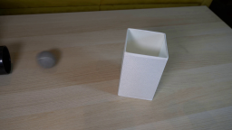
视觉工具实际返回图片 2
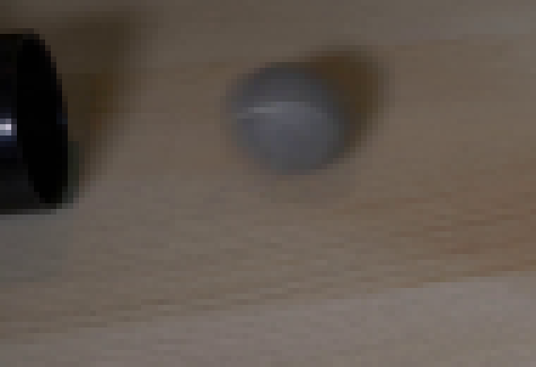
视觉工具实际返回图片 3
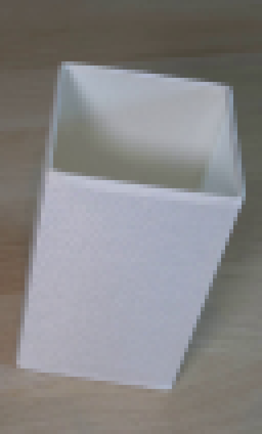
视觉工具实际返回图片 4
视觉工具实际返回图片 5
视觉工具实际返回图片 6
视觉工具实际返回图片 7
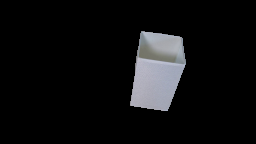
视觉工具实际返回图片 8
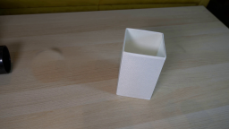
视觉工具实际返回图片 9

视觉工具实际返回图片 10
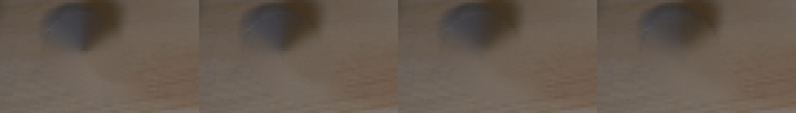
视觉工具实际返回图片 11
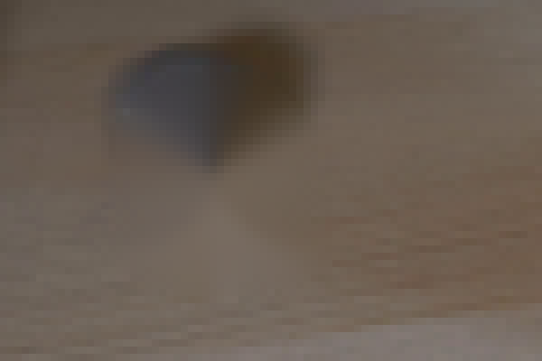
视觉工具实际返回图片 12

视觉工具实际返回图片 13
视觉工具实际返回图片 14
视觉工具实际返回图片 15
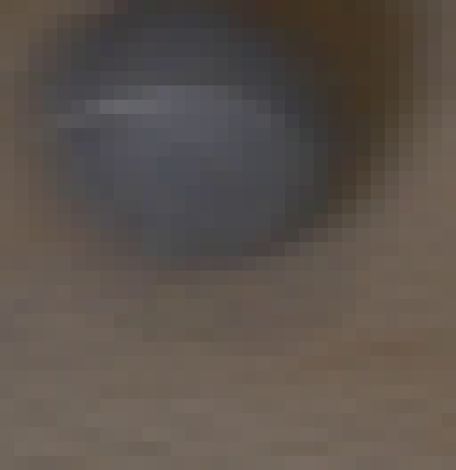
视觉工具实际返回图片 16
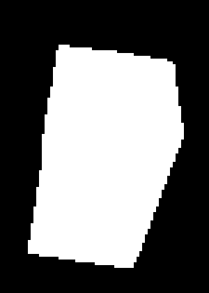
视觉工具实际返回图片 17
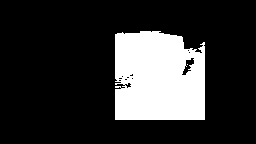
视觉工具实际返回图片 18
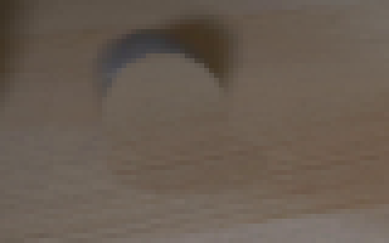
视觉工具实际返回图片 19
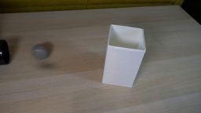
视觉工具实际返回图片 20
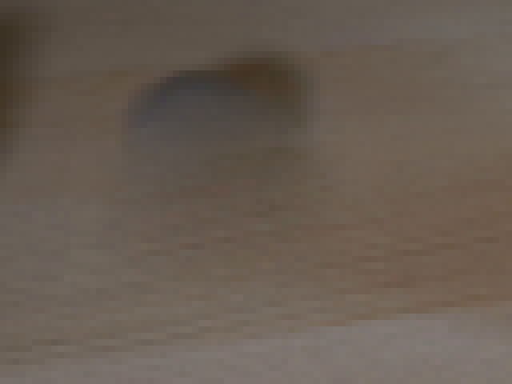
视觉工具实际返回图片 21
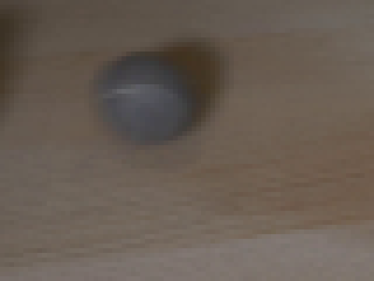
视觉工具实际返回图片 22
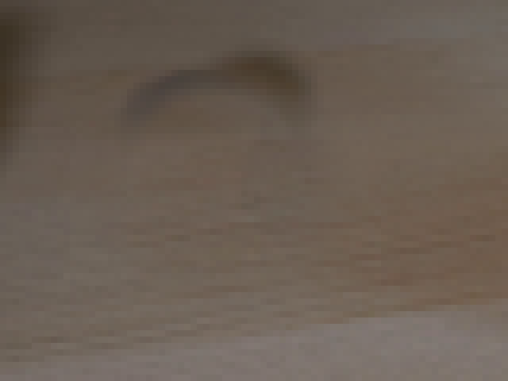
视觉工具实际返回图片 23
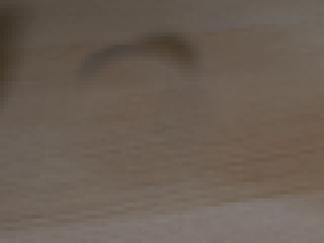
视觉工具实际返回图片 24
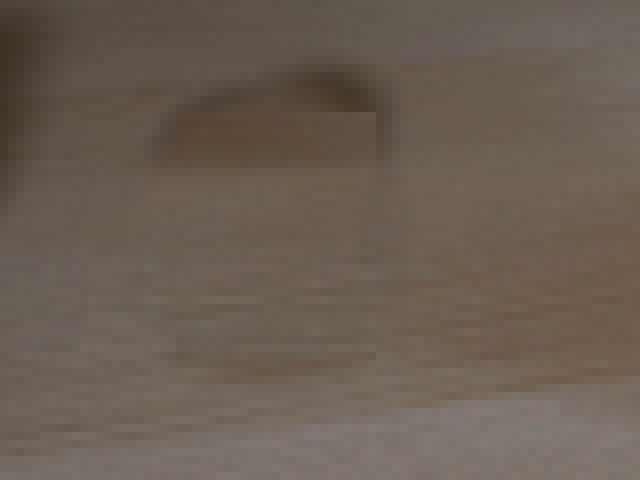
视觉工具实际返回图片 25

视觉工具实际返回图片 26
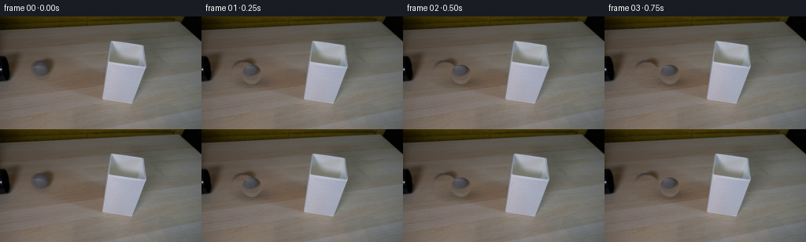
视觉工具实际返回图片 27
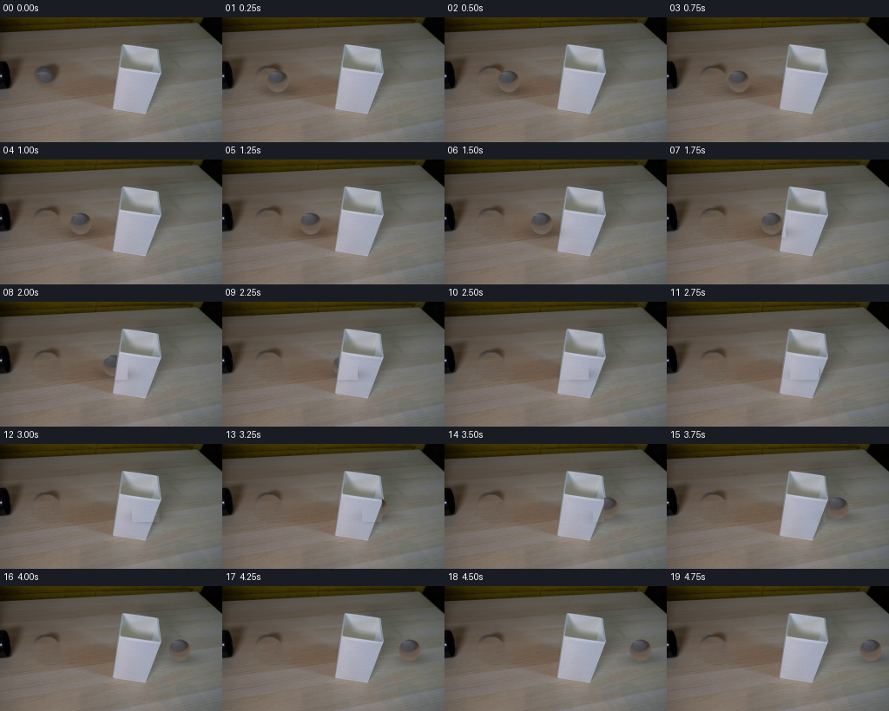
视觉工具实际返回图片 28
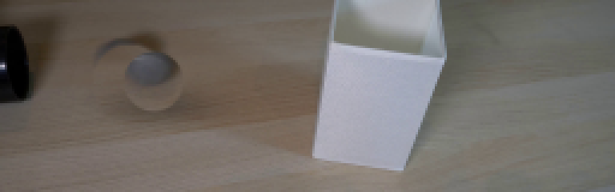
视觉工具实际返回图片 29
视觉工具实际返回图片 30
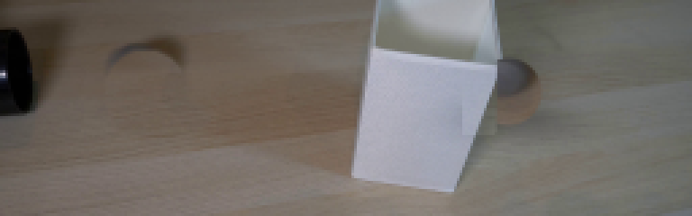
视觉工具实际返回图片 31
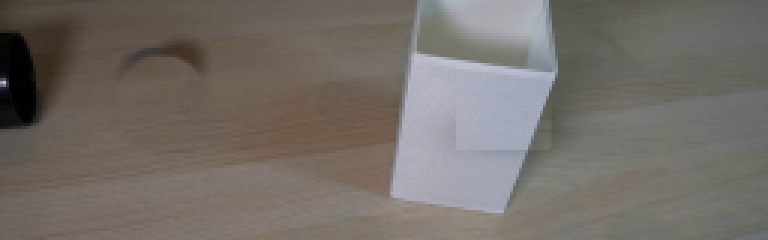
视觉工具实际返回图片 32
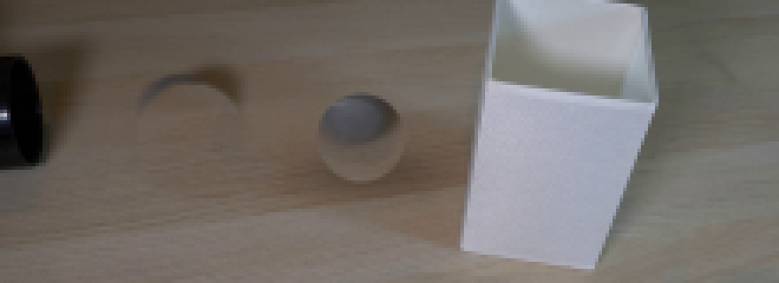
视觉工具实际返回图片 33
视觉工具实际返回图片 34
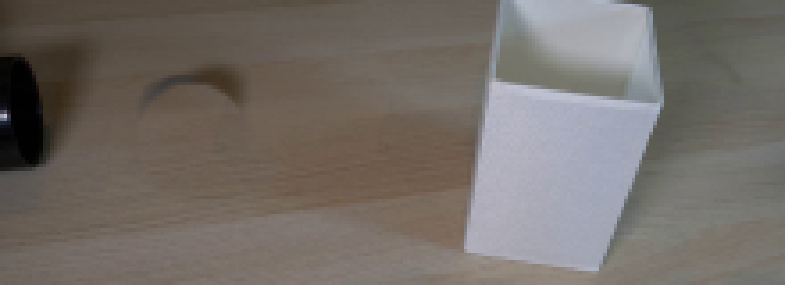
视觉工具实际返回图片 35
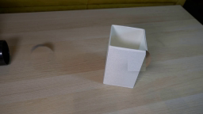
视觉工具实际返回图片 36
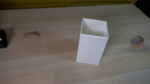
视觉工具实际返回图片 37
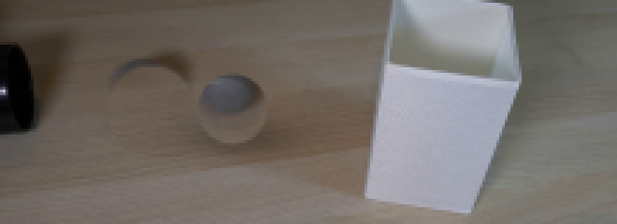
保存候选 1 份；完成命令 68 次；可验证图片返回 37 张。原始 API 响应与完整日志保留在本地。